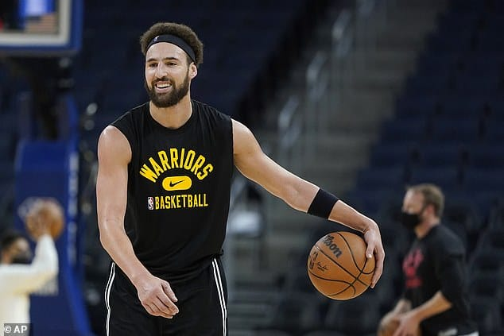

|  |
Starbucks MartiniCatador de starbucks profesional. Soy JoaquÃn Martini, estoy aprendiendo a programar, la verdad no tengo ni idea de lo que estoy haciendo pero creo que tan mal no voy. La verdad que me cuesta una banda sentar el culo y practicar, pero se me hace bastante pasable porque me estoy divirtiedno ponele y además no quiero que me caguen a piñas, además de eso trabajo en la ceo de Starbucks, tomo cafes a domicilio y te digo si estan ricos, si me llamas para algún cafe que no es de starbucks te lo escupo y te meto una piña en la cara. Mas allá de mi trabajo estoy muy emocionado de hacer esto, vivo en Argentina, cosa que no mencione y era lo importante de este texto y nacà en el 2002 a las 12:00AM del dÃa 2 y 3 re loco no? la verdad que no. |
Caramel: Me gusta una banda es re rico lo único malo es que tiene que ser consumido caliente para disfrutarlo mas y eso es algo que a mi no me agrada pero aún asà es un café 10 puntos.
Cookies & Cream: Mi favorito sin dudas me gusta una banda con o sin cafe y es lo que siempre pido debido a que siento que no tiene rival.
Toffee nut: Nunca lo probé porque siempre se quedan sin, y por eso imagino que debe ser buenardo.
| Mes | Número |
|---|---|
| Enero | 1 |
| Octubre | 10 |
|
|
{kind=link}
{kind=link}